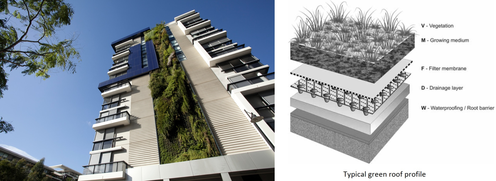
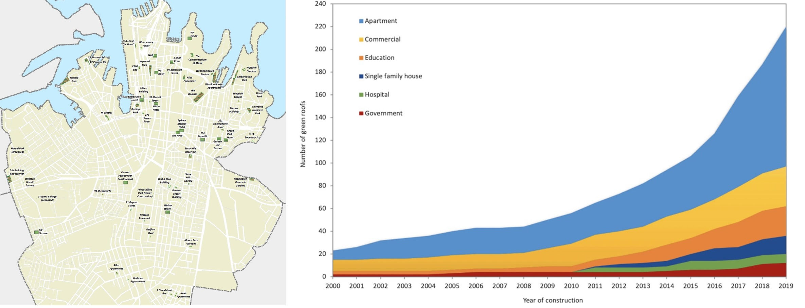

4 Week 4 - Policy
4.1 Summary
For this week’s task, I chose to look into Sydney’s Green Roof & Wall policy that was first introduced in 2014. The City of Sydney has already implemented this policy a decade ago, but has undergone slow progress which recorded 98,000m2 of green roofs and walls installed in March 2014, but currently this only equates to less than 1% of available roof space across the city (see bottom left image below). The local council set out a criteria that demands a minimum 30% vegetation cover to be installed in order to be considered as a “green roof”. 18% of Sydney’s central business district has potential to be retrofitted to accommodate the green roof policy.


Image source of top two and bottom left photo: City of Sydney (2024)
Image source of bottom right graph: Williams et al. (2021)
The bottom right image is taken from Williams et al. (2021) study which shows what types of buildings have implemented green roofs in Melbourne. When you compare this to the types of buildings listed to have either implemented a green roof or a green wall by the City of Sydney (bottom right image), it can assumed that Sydney also prioritised commercial buildings (in this case hotels), residential apartments and buildings such as 1 Bligh Street which is located in the central business district.
There are several benefits that are generated through the implementation of the green roof policy:
Air quality - an increase in vegetation helps remove any harmful pollutants that may circulate the air.
Biodiversity - can attract and support habitats of local fauna and flora
Insulation - the multi-layering of different components that compose a green roof help to “reduce the reliance on active heating and cooling, which helps reduce energy consumption”.
Noise - similar to the previous point, the layering and insulation provide and additional benefit of sound insulation, which reduce potential noise pollution from the surrounding active urban environment
Space - “previously unused space can be turned into valuable space for recreation, gardening, growing food etc”.
Roof life - according to the local council, upgrading a roof through this strategy can extend a roof’s lifespan by up to 40 years. This is due to the fact that the extensive layering of a roof (as seen in the right-hand image above) limits the exposure to the Sun and harsh climate conditions.
Urban heat island effect - green roofs help to combat this as the vegetative layer is known to reduce surface air temperatures.
4.2 Applications
There are several ways in which remote sensing can be implemented into Sydney’s Green Roof Policy. Although this policy was already implemented in 2014, it can be argued that there is scope to extend the project through detecting how many buildings can upgrade to a green roof, along side accommodating for the existing 18% of potential buildings that were detected prior to this. Additionally, the effects of green roofs on temperature reduction can be further studied by researcher when a significant amount of green roofs have been implemented in accordance to their policy aims towards a greener and sustainable city.
Measuring roof space - this can be done through using SAR (synthetic aperture radar) data, which can detect the housing footprints, as it extracts polygon data to obtain the square footage of each building that has the potential to install a green roof. These measurements can be compared to construction data to ensure the measurements recorded align with the extracted data from the satellite. Additionally, Bartesaghi-Koc et al. (2020) state that “LiDAR can be used to detect building footprints”.
Detecting vegetation - the NDVI (Normalised Difference Vegetation Index) data can be extracted which will be able to detect the vegetation from existing buildings with implemented green roofs. Given that a minimum of 30% vegetation cover is required to meet the criteria from the city council, this can be paired up with roof measurements to detect which buildings are compatible with these requirements.
Time-scale comparison - according to NASA Landsat Science (2024), GISS analysts used Landsat data to study how green roofs impacted temperature change in Chicago. Similarly, Sydney can use this data to present and compare before and after installing green roofs, and how increasing the scale of green roofs over time influence (ideally to reduce) temperatures, thus combating the urban heat island effect.
Temperature change - Li et al. (2022) argues that this can be detected through several satellites such as Terra, Aqua and many more. LST (land surface temperature) can be measured and compared to a before and after period to test the extent of influence green roof implementation has on reducing temperatures. Additionally, Bartesaghi-Koc et al. (2020) conducted a study where they assessed NDVI data from summer and winter recordings using “Visible (RED) and Near Infrared (NIR) reflectance bands” to gain insight on whether compare tree cover results in cooling the temperature. Perhaps the same methods can be applied to detect the increase of vegetation and its impact on cooling the air temperature in order to reduce the urban heat island effect in Sydney.
4.3 Reflections
In researching Sydney’s policy it was surprising to see how only less than 1% (53 buildings) have implemented green roofs to abide with the city’s policy. Although the policy does not directly state particular requirements in terms of quantity or building types that must adopt the policy, rather it states the benefits of implementing such green roofs and walls, it is still relatively shocking to see how little progress has been made, given that it has been a decade since its original installation. Perhaps there are several limitations to installing green roofs that may not be explicitly stated such as the cost of installation, availability of roofs and existing quality of roofs that may determine whether or not the buildings’ roof can sustain such upgrades.
Given that remote sensing enables the ease of detecting physical features within the environment, it was interesting to see how satellite data can be used for urban purposes. The policy promotes a solution whose main focus is designed towards tackling the urban heat island effect, but also produces social benefits such as generating usable space, reducing noise, and creating aesthetically appealing buildings which creates attraction towards a place. Although remote sensing cannot measure these social additions, it was interesting to see how it can measure the physical features such as vegetation, building footprints and air temperature to assess to what extent does implementing such policies create a positive environmental impacts, that would bring Sydney closer to achieving their sustainability goals.
4.4 References
Bartesaghi-Koc, C. et al. (2020) Quantifying the second cooling capacity of ‘green infrastructure types’ (GITs): An approach to assess and mitigate surface urban heat island in Sydney, Australia. Landscape and Urban Planning. 203, pg 1-21. [Online] Available via: https://www.sciencedirect.com/science/article/pii/S0169204620301407
City of Syndey (2024) https://www.cityofsydney.nsw.gov.au/environmental-support-funding/green-roofs-and-walls
Green roofs and wall policy https://www.cityofsydney.nsw.gov.au/-/media/corporate/files/2020-07-migrated/files_g/green-roofs-and-walls-policy.pdf?download=true
Green roofs and wall policy implementation plan https://www.cityofsydney.nsw.gov.au/-/media/corporate/files/2020-07-migrated/files_g/green-roofs-and-walls-policy-implementation-plan-adopted.pdf?download=true
Green roofs and walls in the local area: https://www.cityofsydney.nsw.gov.au/-/media/corporate/files/2020-07-migrated/files_m/map-green-roofs-walls-cos-lga2.pdf?download=true
Li, Z. L. et al. (2022) Satellite Remote Sensing of Global Land Surface Temperature: Definition, Methods, Products and Applications. Reviews of Geophysics. 61(1), pg 1-77. [Online] Available via:https://agupubs.onlinelibrary.wiley.com/doi/10.1029/2022RG000777
NASA Landsat Science (2024) https://landsat.gsfc.nasa.gov/article/finding-ways-to-turn-down-the-heat-in-cities-with-satellites/
Williams, N.S.G et al. (2021) Ten years of greening a wide brown land: A synthesis of Australian green roof research and roadmap forward. Urban Forestry & Urban Greening. 62, pg 1-10. [Online] Available via: https://www.sciencedirect.com/science/article/pii/S1618866721002041